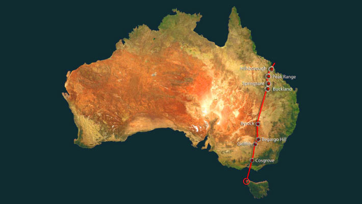

The Cosgrove Volcanic Track

A volcano is a Mountain that has an opening through which lava erupts from the earth's crust. In the south most state, victoria, there are over 400 volcano's. In Australia, there are two active volcano's. There is also a chain of volcano's on the eastern side of the continent, called The Cosgrove Volcanic Track. This chain extends 2,000 kilometres from Cape Hillsborough in Queensland to Cosgrove in Victoria. scientists examined 15 extinct volcanoes in eastern Australia that have been known for quite some time and appeared to follow a generally similar track.